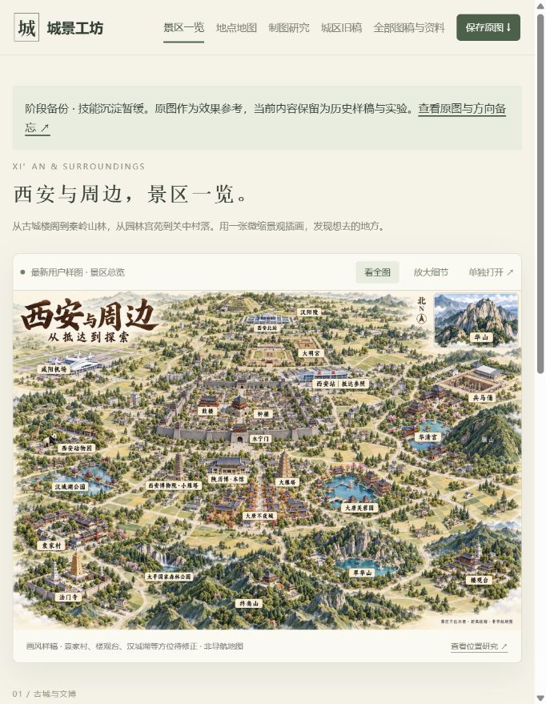
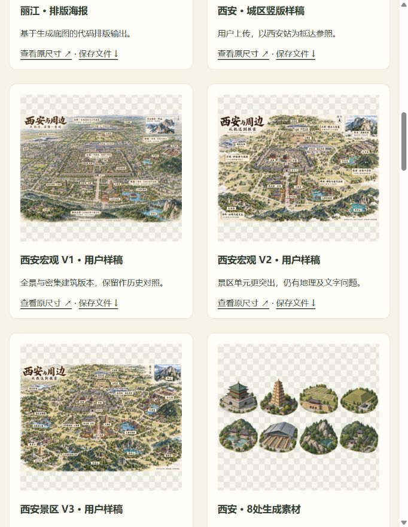
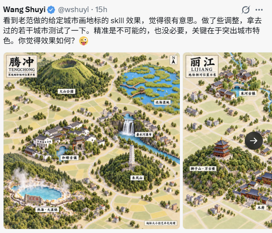

01 · 看图与放大
打开西安样稿，切换全图与细节，保存原尺寸图片。
进入图稿查看 →CITY ATTRACTIONS / VISUAL GUIDE
汇总城市及周边值得去的景点，以图的方式展示。
当前以西安为样例，后期需要继续优化实现。

打开西安样稿，切换全图与细节，保存原尺寸图片。
进入图稿查看 →
看各版图稿的实际差异，展开研究说明、提示词和来源。
进入全部图稿与资料 →两张引导图均为本项目实际浏览器截图；图中样稿不是已通过地理验收的成品。
围绕城市及周边，汇总代表性景区、当地人常去和有口碑的地方，说明各自的特色与游览价值。
参考原始腾冲／丽江图，以景区为画面主体，搭配名称和简短介绍，体现真实的大体方位，帮助用户理解与探索城市。
已有西安样稿、景点资料及技能草稿。后续需要优化景点收集与筛选、位置准确性、画面效果和生成流程，逐步形成可复用的 Skill。

用户提供的参考截图。具体原版本及使用许可待核实；西安样稿与后续代码实验不替代这一效果标准。
35个目的地、4个抵达参照和1个地域；24处有来源坐标，另有原始边界证据和8处景区生成素材。
15个目的地缺坐标，真实外形与连续景观效果尚未验收，全球输入到成图流程尚未打通。
本页展示城市景点汇总 Skill 的目标、现有效果和研究资料。当前为研究原型，后期需要优化实现；完整文档与阶段备份保留。